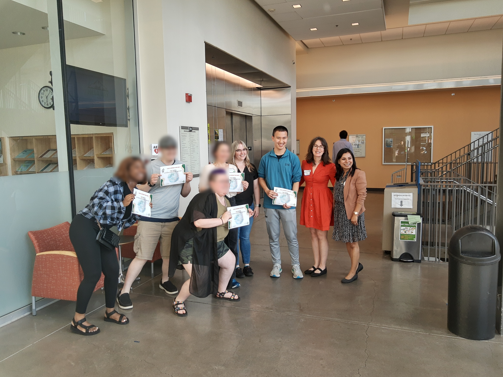

Hello Everyone! Welcome to Youth for Empathetic AI. We are a student-led non-profit organization focused on promoting a civil cyberspace and AI education among K-12 students.
On Saturday May 13th, two of our members, Justin Xie and Henry Xie, participated in the 2023 Ideathon hosted by the Compassionate Computing Lab (Coco Lab) at Portland State University (PSU). The theme of the Ideathon was AI for Creative Storytelling: Climate Change in Oregon. The goal of the Ideathon was to bring together a group of interdisciplinary students from different backgrounds to utilize AI tools in spreading important messages on the issue of climate change. The event attracted a variety of undergraduate and graduate students from different disciplines across the PSU student body. Although our two members were the only high schoolers who attended this Ideathon, they were able to contribute a lot to the climate change and AI discussion, in addition to going through an important experience of learning and collaboration.
Furthermore, we were able to interact with several mentors: Prof. Ameeta Agrawal (Computer Science), Prof. Brianne Suldovsky (Communications) and Prof. Kathi Inman Berens (English). They each brought their own expertise to the Ideathon which helped the students to develop and hone their ideas into tangible, presentable products.
The main goal of the Ideathon was to incorporate the new and developing, yet powerful field of artificial intelligence and machine learning to the process of storytelling and message presentation. In the first ever Ideathon hosted by the Coco Lab, climate change was the main topic. Working in teams with interdisciplinary groups, we hoped to create a product that aimed to spread a specific message to a specific target audience. Throughout the development project we not only furthered our knowledge on how to use AI tools such as ChatGPT, Bard, and StableDiffusion, we also picked up new tools including MidJourney, ChatPDF, Dall-E, and Tome.
Empathetic AI is a gateway to many possibilities. It allows for many areas of society to expand and improve. With these possibilities come the other logistics, like educating people on AI and its effect on society. Empathetic AI has the possibility to change society for good, but we also need to know where the lines are drawn. Our organization, Youth for Empathetic AI, is a strong supporter of using Empathetic AI in a civil manner, while championing Empathetic AI education.
Dry Fields: A play on Climate Change’s impacts on agriculture
Justin Xie's group focused their efforts on addressing the impacts of climate change in rural Oregon, especially on the farmers and the agricultural industry. The main issue they faced was the prevalence of climate change skeptics and doubters which are common in the aforementioned rural communities. The group decided that they would approach these communities by helping them solve problems such as maximizing crop yields and minimizing the effects of drought through sustainable farming. The group also decided to spread this message in the form of a play that could be performed at community gatherings that are one of the important functions in rural agricultural communities. The play was written by ChatGPT and then polished into a final product. Though not a Broadway masterpiece, the play titled Dry Fields highlights the abilities that AI provides that can help creatively spread a message in an unconventional manner.

The Guardians of the Forest: A picture book for the next generation
Henry Xie’s group took a different route in both their target audience and presentation medium. The group decided on inspiring the next generation of young children in the fight against climate change. They did this in the form of a picture book casting 3 main characters: Benny, Doug, and Mr. Hood. All 3 characters were selected through their relationship with Oregon. Benny was the human version of a beaver, Doug was the wizard version of the Douglas Fir, and Mr. Hood, a personified version of Mt. Hood. All images were generated by the AI MidJourney and then strung together by the authors (Henry and his group). Their final product shows the power of the possibilities that image generation models provide. They can be used to creatively spread a message to future generations that each and every person can play a part in fighting climate change.
Two other projects were created alongside Dry Fields and The Guardians of the Forest. One focused on inspiring the tourism industry to take action against climate issues by comparing before and after versions of popular Oregon tourist destinations. The other group targeted the familiar audience of rural Oregon farmers, but not through a play. Instead, they aimed to fine-tune ChatGPT to be a friendly chatbot to help farmers struggling with effects of an unpredictable climate.
The Ideathon was a blast! Both our members not only left inspired by the possibilities that AI opens for everyone, but also left enlightened by the methods and messages that can be spread about the climate change fight. Coco Lab plans to host future Ideathons that Youth for Empathetic AI will be sure to attend as the knowledge and experience by collaborating with such a diverse group of interdisciplinary students is not something that can be easily forsaken.